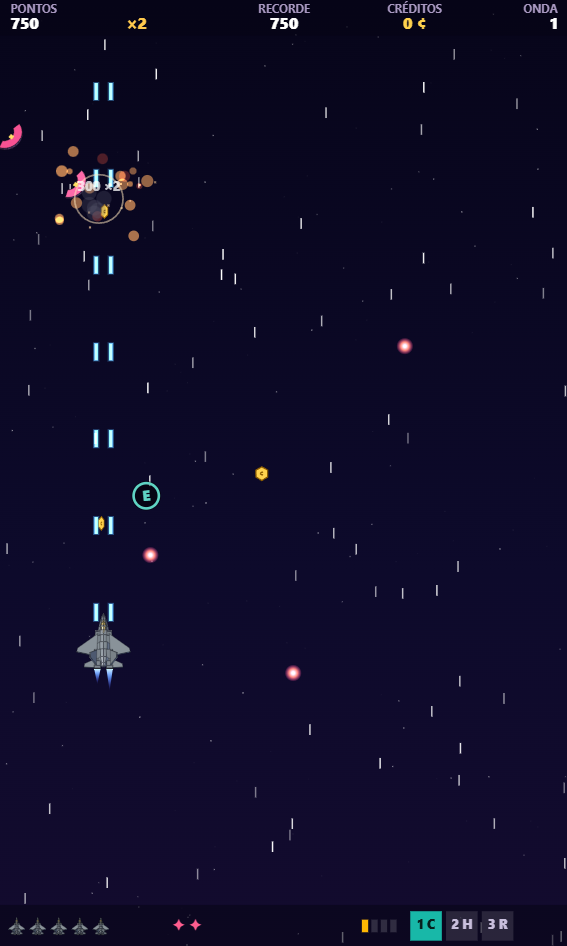
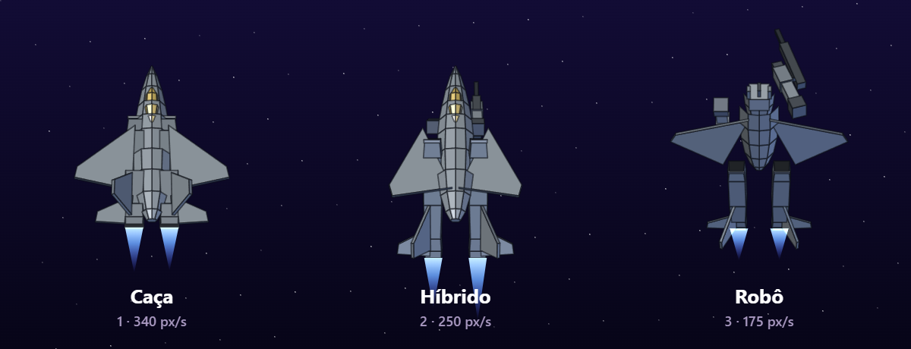
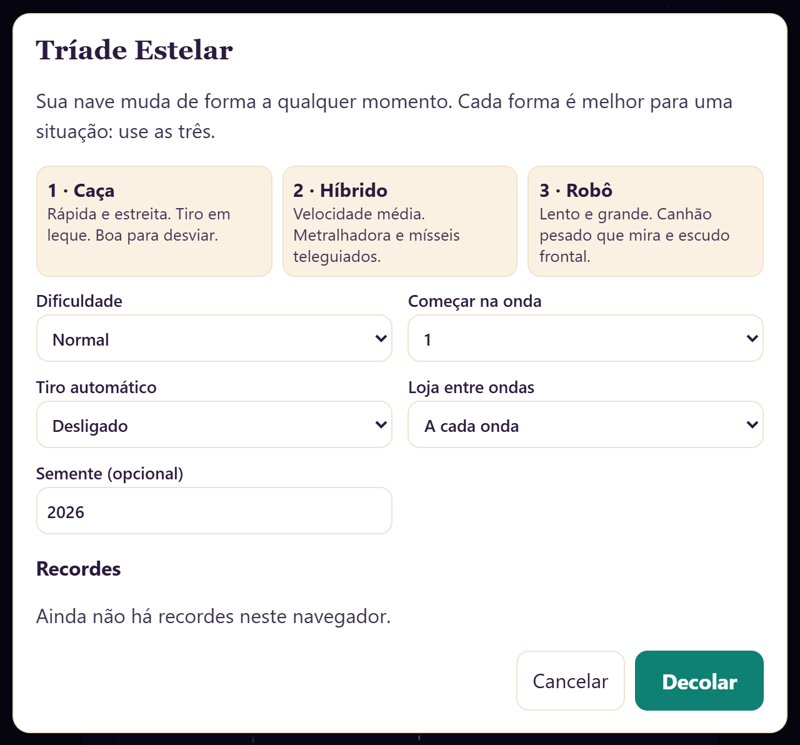
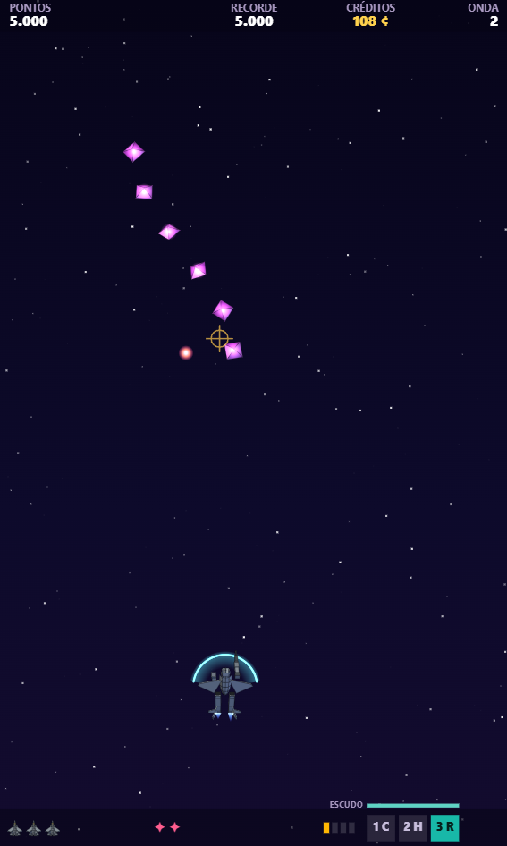
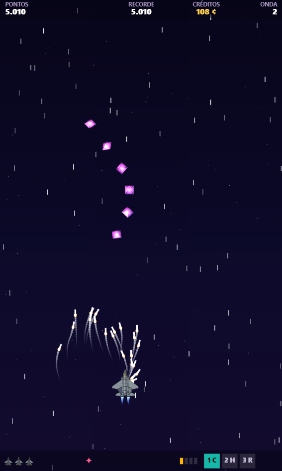
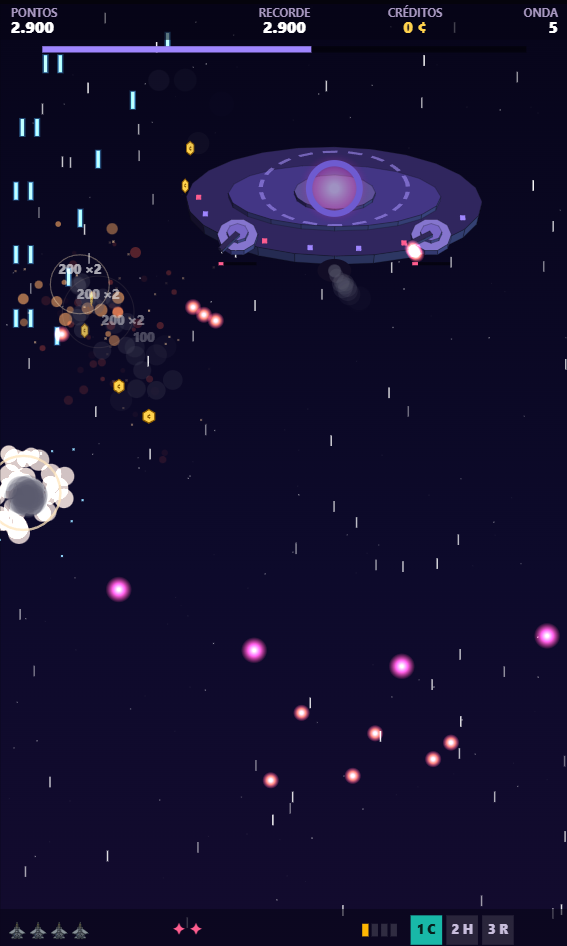
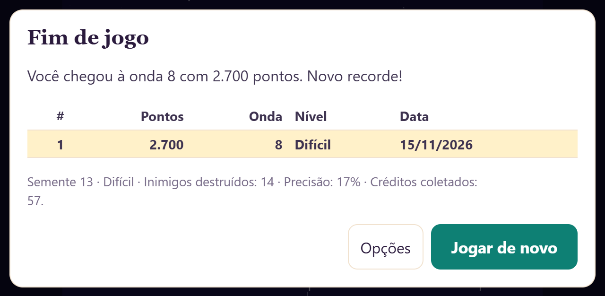
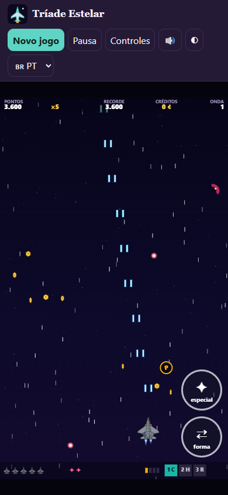

O jogo
O Tríade Estelar é um jogo de tiro de rolagem vertical: a ação é vista de cima, e você enfrenta muitos inimigos atirando neles e desviando dos tiros deles, o que a literatura chama de shoot 'em up. [2] A sua nave muda de forma a qualquer momento: Caça, Híbrido e Robô. As ondas de inimigos não acabam, e a cada cinco aparece uma nave-mãe. [1]
Os inimigos destruídos soltam fichas de crédito. Entre as ondas, você gasta os créditos no hangar, em aprimoramentos de armas e da nave. É um único arquivo HTML, que funciona sem internet, em quatro idiomas, no computador e no celular.

As três formas
Cada forma é melhor numa situação. Trocar de forma é a principal decisão do jogo.

| Forma | Velocidade | Área de impacto | Arma | Quando usar |
|---|---|---|---|---|
| 1 · Caça | 340 px/s | raio de 5 px | tiro em leque, que se abre com a potência | para desviar de muitos tiros e atravessar a tela |
| 2 · Híbrido | 250 px/s | raio de 7 px | metralhadora e mísseis teleguiados | contra inimigos espalhados e que mudam de lugar |
| 3 · Robô | 175 px/s | raio de 10 px | canhão pesado que mira sozinho, ou no mouse, e escudo frontal | contra alvos grandes e resistentes |
A transformação leva uma fração de segundo, e durante ela a nave fica invulnerável. O escudo do Robô bloqueia os tiros que chegam pela frente e gasta energia a cada tiro. Se a energia acaba, o escudo desliga até recarregar 40%. [1]
↑ Voltar ao topoControles
| Comando | O que faz |
|---|---|
| ← ↑ ↓ → ou W A S D | move a nave |
| Espaço ou J | atira; segure para tiro contínuo |
| Shift ou K | passa para a próxima forma |
| 1 2 3 | vai direto para Caça, Híbrido ou Robô |
| B ou L | especial: enxame de mísseis que apaga os tiros inimigos |
| Mouse | no Robô, o canhão mira no cursor; o botão esquerdo atira |
| P ou Esc | pausa |
| Toque | arraste o dedo em qualquer lugar para mover; o tiro é automático; os botões redondos trocam de forma e soltam o especial |
Passo a passo no app
1. Escolha as opções
Ao abrir o jogo, aparece a janela inicial com um resumo das três formas e as opções. Para começar, use o nível Fácil, que dá 5 naves em vez de 3, comece na onda 1 e deixe a loja abrir a cada onda. Clique em Decolar.

| Opção | Escolhas |
|---|---|
| Dificuldade | fácil, normal ou difícil (veja os inimigos) |
| Começar na onda | 1, 3, 5, 8 ou 10; começando adiante, a arma já vem com mais potência |
| Tiro automático | desligado ou ligado; no celular já vem ligado |
| Loja entre ondas | a cada onda, a cada 3 ondas ou só depois da nave-mãe |
| Semente | um número; com a mesma semente, as ondas vêm na mesma ordem |
2. Atire e colete os créditos
Segure Espaço e acompanhe os inimigos. Quando um deles explode, caem fichas douradas com o símbolo ¢. Passe por cima delas para coletar: o valor aparece por um instante, e o total fica em CRÉDITOS, no alto da tela. Destruir inimigos em sequência faz o multiplicador de pontos subir, até ×8. Ele cai se você passar uns dois segundos sem destruir nada, e volta a ×1 se você perder uma nave.
3. Vire Robô contra alvos fortes
Aperte 3. O Robô fica lento, mas o canhão causa mais dano e mira sozinho no inimigo mais próximo, ou no cursor do mouse, marcado por uma mira. O arco azul na frente é o escudo, e a barra ESCUDO no rodapé mostra a energia.

4. Use o especial quando apertar
Com B, a nave solta um enxame de 28 mísseis em leque e apaga todos os tiros inimigos da tela, que viram pontos. Durante 1,6 segundo, ela fica invulnerável. Você começa com 2 cargas, mostradas como estrelas cor-de-rosa no rodapé.

5. Compre no hangar
Quando a onda termina, o hangar abre e o jogo para. Cada cartão mostra o efeito atual e o próximo, os níveis já comprados e o preço. Se o saldo não basta, o botão diz quanto falta. Compre e clique em Decolar para a onda seguinte. O hangar tem uma seção só para ele.

6. Enfrente a nave-mãe
A cada cinco ondas, um alarme anuncia a nave-mãe e uma barra de vida aparece no alto. Ela tem três torres, que disparam tiros triplos na sua direção, enquanto a própria nave-mãe alterna espirais, cortinas e anéis de tiros. Destrua as três torres para expor o núcleo, o único ponto que derruba a nave. Filas de drones de escolta descem durante a luta.

7. Fim de jogo e recordes
Quando a última nave cai, a janela de fim mostra a onda alcançada, os pontos, a tabela de recordes deste navegador e um resumo: semente, nível, inimigos destruídos, precisão dos tiros e créditos coletados.

8. No celular
No celular, arraste o dedo em qualquer ponto da tela: a nave acompanha o movimento do dedo, sem ficar escondida embaixo dele. O tiro é automático. Os botões redondos à direita soltam o especial e trocam de forma.

Inimigos e itens
Os inimigos não têm nome no jogo. A tabela usa nomes descritivos, e os valores vêm do código. [1]
| Inimigo | Como age | Resistência | Pontos | Créditos | Desde a onda |
|---|---|---|---|---|---|
| Drone | fila de 6 que desce em zigue-zague | 2 | 100 | 5 ¢ | 1 |
| Mergulhador | V de 5 que para no alto e mergulha um a um | 3 | 150 | 8 ¢ | 1 (raro), 2 |
| Rasante | grupo de 5 que cruza a tela em curva | 3 | 150 | 8 ¢ | 1 |
| Canhoneira | para no alto e atira em rajada ou em leque | 16 | 600 | 30 ¢ | 2 |
| Cruzador | grande, atira em anel e em rajada | 80 | 2.500 | 80 ¢ | 4 |
| Nave-mãe | três torres e um núcleo | 3 × 70 + 220 | 15.000 | 300 ¢ | 5, 10, 15… |
A resistência sobe 10% a cada onda e muda com o nível: × 0,8 no fácil, × 1 no normal e × 1,25 no difícil. No difícil, os inimigos também atiram 35% mais vezes e com tiros 20% mais rápidos; no fácil, 30% menos vezes e 20% mais devagar.
| Item | Efeito |
|---|---|
| P | potência da arma +1, até 4 |
| M | mais uma carga de especial |
| E | recarrega o escudo |
| 1UP | uma nave de reserva |
| ¢ | créditos para o hangar |
Inimigos pequenos raramente soltam itens. A canhoneira solta um em pouco mais da metade das vezes, o cruzador sempre solta dois, e a nave-mãe solta cinco. Ao perder uma nave, a potência cai um nível.
↑ Voltar ao topoO hangar
Os aprimoramentos do hangar valem até o fim da partida e somam-se aos itens que caem durante o jogo. Cada nível custa 60% a mais que o anterior, arredondado para múltiplos de 5. Os suprimentos não têm nível: ficam mais caros a cada compra. [1]
| Aprimoramento | Efeito por nível | Níveis | Preços (¢) |
|---|---|---|---|
| Canhões do Caça | +15% de dano do Caça | 5 | 60, 95, 155, 245, 395 |
| Cadência | +10% de cadência nas três formas | 5 | 80, 130, 205, 330, 525 |
| Mísseis do Híbrido | +1 míssil por salva e recarga 10% mais curta | 4 | 90, 145, 230, 370 |
| Canhão do Robô | +20% de dano; no nível 4, os tiros atravessam os inimigos | 4 | 80, 130, 205, 330 |
| Enxame ampliado | +1 carga máxima de especial e +8 mísseis no enxame | 3 | 120, 190, 305 |
| Blindagem | aguenta +1 tiro por onda sem perder vida | 3 | 150, 240, 385 |
| Escudo do Robô | +25% de capacidade e de recarga | 4 | 70, 110, 180, 285 |
| Motores | +6% de velocidade nas três formas | 4 | 60, 95, 155, 245 |
| Ímã | puxa créditos de 46 px para 92, 138 e 184 px; também puxa itens | 3 | 50, 80, 130 |
| Transformação rápida | transforma 50% mais rápido e fica mais tempo invulnerável | 2 | 70, 110 |
| Vida extra | +1 nave, até 9 | — | 400, depois +250 a cada compra |
| Carga de especial | +1 carga | — | 90, depois +30 |
| Potência | +1 de potência, até 4 | — | 110, depois +40 |
A blindagem recarrega no começo de cada onda e aparece no rodapé como escudinhos dourados ⛨. Quando ela segura um tiro, aparece a frase “A blindagem aguentou o tiro”.
↑ Voltar ao topoComo as naves são desenhadas
O jogo não usa biblioteca 3D. As naves são feitas de peças rígidas, como fuselagem, asas, pernas, braços e canhão, descritas por pontos no espaço. Cada peça tem uma posição e um giro para cada forma, e durante a transformação o jogo calcula as posições intermediárias. A câmera fica inclinada 36°, e as faces são desenhadas da mais distante para a mais próxima, com duas luzes e brilho. [1]
A forma Caça tem a silhueta inspirada no F-22 Raptor, um caça furtivo bimotor dos Estados Unidos, que voou pela primeira vez em 7 de setembro de 1997 e entrou em serviço em dezembro de 2005. O projeto adotou uma asa em forma de delta, parecida com um diamante. [3] No jogo, isso aparece na asa em diamante, nas duas derivas inclinadas para fora e nos dois jatos lado a lado. É uma inspiração de silhueta, não uma réplica.
A ideia de um caça que vira robô lembra séries de animação japonesas como Macross, exibida no Japão de outubro de 1982 a junho de 1983. [4] O Tríade Estelar não usa nomes, desenhos nem história dessa série: as três formas, os inimigos e os nomes foram criados para o jogo.
↑ Voltar ao topoO que os números dizem
Duas contas saem direto do código, e uma vem de partidas jogadas. [1]
- Comprar tudo custa 6.830 ¢. É a soma de todos os níveis dos dez aprimoramentos, sem contar os suprimentos.
- A onda 1 rende no máximo de 120 a 160 ¢. Ela tem quatro grupos de inimigos, e cada grupo solta de 30 a 40 ¢ se for destruído inteiro.
- Na prática, coleta-se menos. Um piloto automatizado, que move a nave pelo teclado, desvia dos tiros e vai atrás das fichas, jogou a onda 1 no nível fácil, com a semente 42, oito vezes: coletou de 68 a 94 ¢ na onda 1. Ao fim da onda 2, o total ia de 175 a 244 ¢.
Na prática, isso dá um aprimoramento barato por onda no começo. Para encher o hangar, são precisas muitas ondas e as nave-mães, que rendem 300 ¢ cada.
↑ Voltar ao topoO que estas medições não medem. São oito partidas de um piloto automatizado, com a mesma semente. O resultado variou porque o piloto reage em tempo real. Uma pessoa coleta mais ou menos fichas conforme o estilo de jogo, e o nível e a onda inicial mudam tudo.
Dicas
- Troque de forma o tempo todo. Caça para desviar, Híbrido para grupos espalhados, Robô para canhoneiras, cruzadores e torres.
- Transforme-se para escapar. A transformação dá um instante de invulnerabilidade. Ele salva quando um tiro está para acertar.
- Guarde o especial para a nave-mãe. Ele apaga todos os tiros da tela, inclusive as espirais da nave-mãe.
- Compre o ímã cedo. Ele é o mais barato e faz você coletar mais créditos sem sair do lugar.
- A blindagem compensa no nível difícil. Cada nível é uma nave a menos perdida por onda.
- Não persiga fichas no meio dos tiros. Perder uma nave custa um nível de potência e zera o multiplicador.
Erros comuns
“O Robô aguenta tudo.”
O escudo só cobre a frente, e a energia acaba. E o Robô é o maior e o mais lento: é a forma mais fácil de acertar.
“Atirar no centro da nave-mãe derruba ela.”
Enquanto houver torres, o núcleo não leva dano. Destrua as três primeiro.
“Os créditos ficam para a próxima partida.”
Não. Créditos e aprimoramentos valem só para a partida atual. Só os recordes ficam salvos no navegador.
“Comprar vida extra é sempre o melhor.”
Ela começa em 400 ¢ e encarece 250 ¢ a cada compra. A blindagem evita a perda da nave e da potência, e se recarrega a cada onda.
“A nave é um F-22.”
É uma silhueta inspirada no F-22, simplificada, que vira robô. Não é um modelo fiel do avião real.
Revisão rápida
1. Quais teclas levam direto a cada forma?
1 para o Caça, 2 para o Híbrido e 3 para o Robô. Shift ou K passa para a próxima.
2. Qual forma é a mais rápida e a mais difícil de acertar?
O Caça: 340 px/s e o menor raio de impacto.
3. O que o especial faz?
Solta um enxame de mísseis, apaga os tiros inimigos e deixa a nave invulnerável por 1,6 segundo.
4. Como derrotar a nave-mãe?
Destrua as três torres para expor o núcleo e depois acerte o núcleo.
5. Como se ganham créditos?
Destruindo inimigos e passando por cima das fichas douradas que eles soltam.
6. Quando o hangar abre?
Depois de cada onda, a cada 3 ondas ou só depois da nave-mãe, conforme a opção Loja entre ondas.
7. O que acontece com o Canhão do Robô no nível 4?
Os tiros pesados atravessam os inimigos e acertam vários em linha.
8. Os aprimoramentos ficam para a próxima partida?
Não. Valem só até o fim da partida.
Referências
- Giovani Perotto Mesquita, “Tríade Estelar”, jogo deste site, giovanipm.github.io/TriadeEstelar.html. As formas, os inimigos, os preços e os efeitos do hangar estão no código do jogo. As capturas de tela deste tutorial foram feitas jogando o próprio jogo, e as medições de créditos vêm de oito partidas de um piloto automatizado.
- Wikipedia, “Shoot 'em up”, acesso em 15/11/2026, en.wikipedia.org/wiki/Shoot_'em_up. Definição do gênero e dos jogos de rolagem vertical.
- Wikipedia, “Lockheed Martin F-22 Raptor”, acesso em 15/11/2026, en.wikipedia.org/wiki/Lockheed_Martin_F-22_Raptor. Caça furtivo bimotor, primeiro voo em 7/9/1997, entrada em serviço em dezembro de 2005 e asa em delta “parecida com um diamante”.
- Wikipedia, “Super Dimension Fortress Macross”, acesso em 15/11/2026, en.wikipedia.org/wiki/Super_Dimension_Fortress_Macross. Exibição no Japão de outubro de 1982 a junho de 1983.